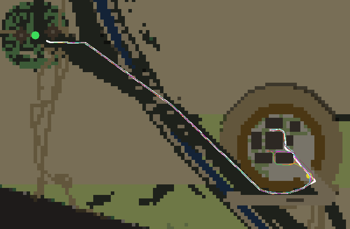
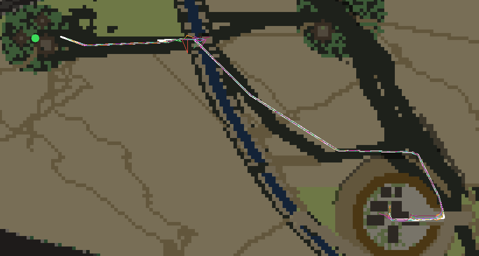
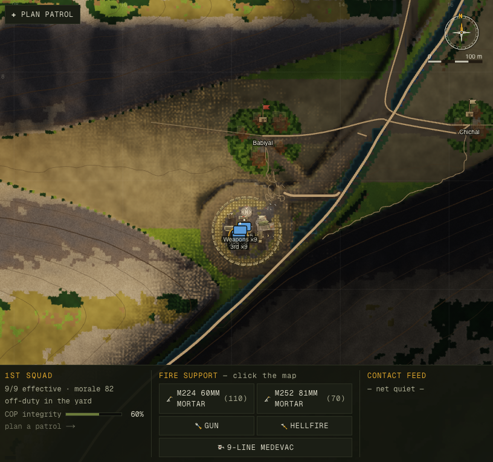
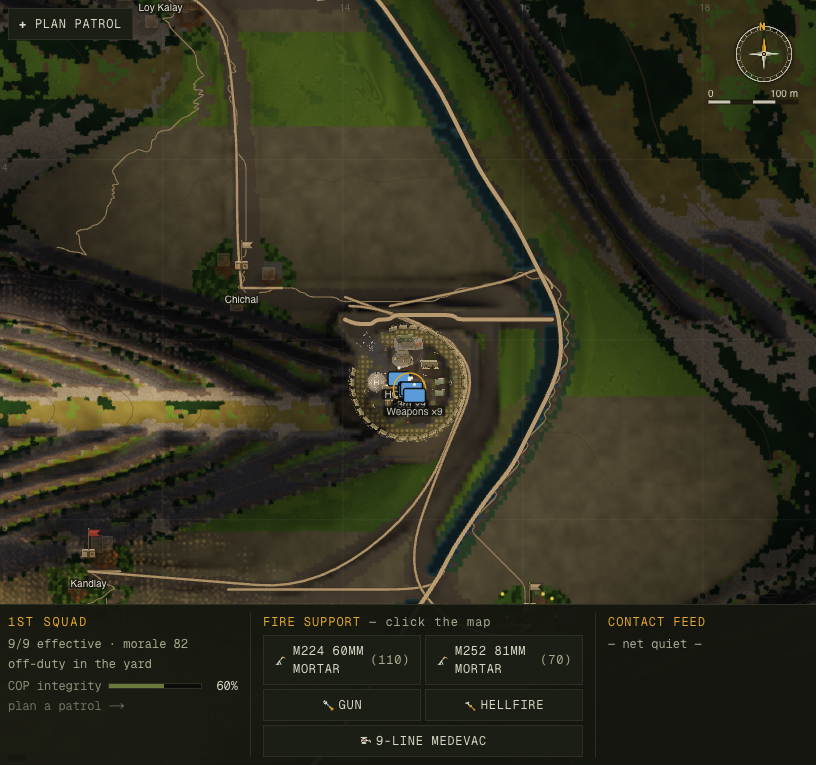
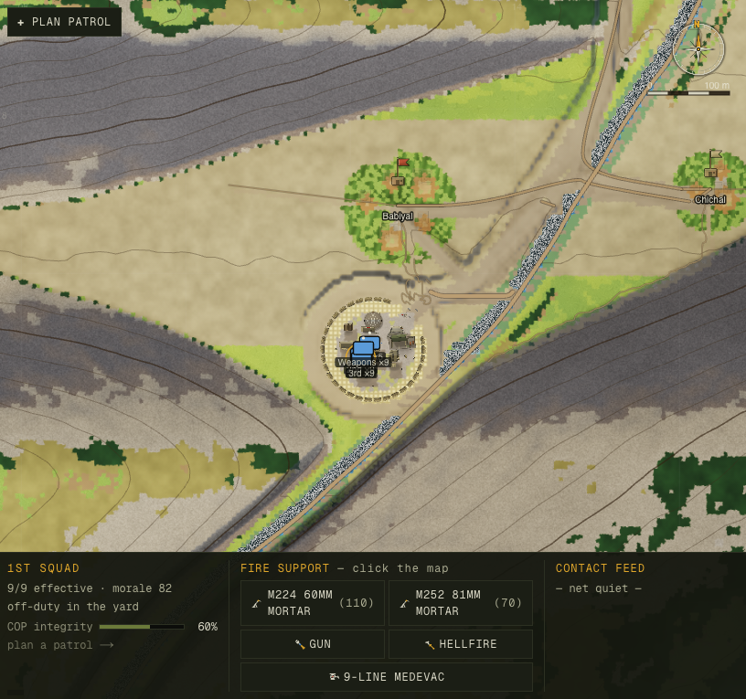
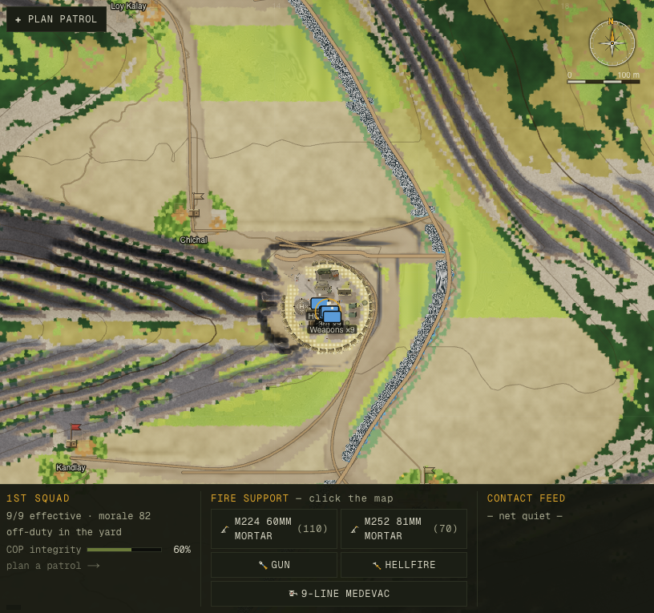
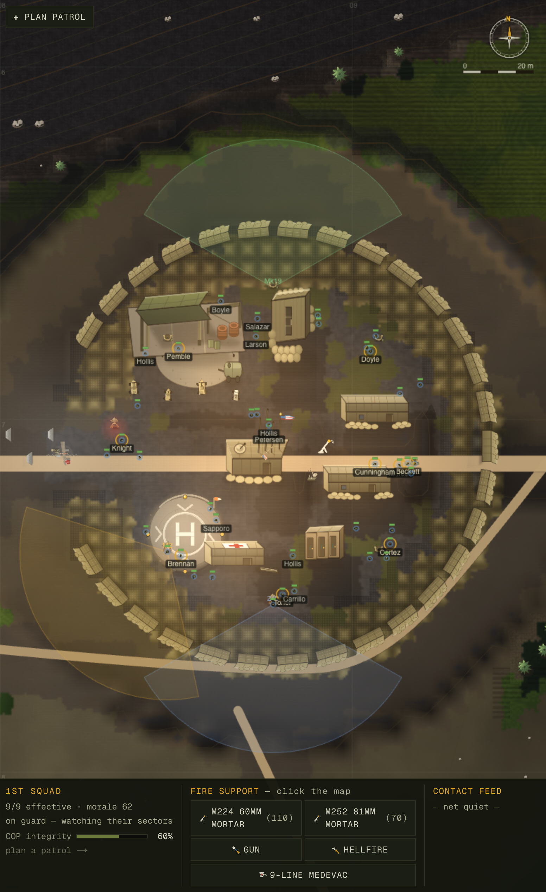
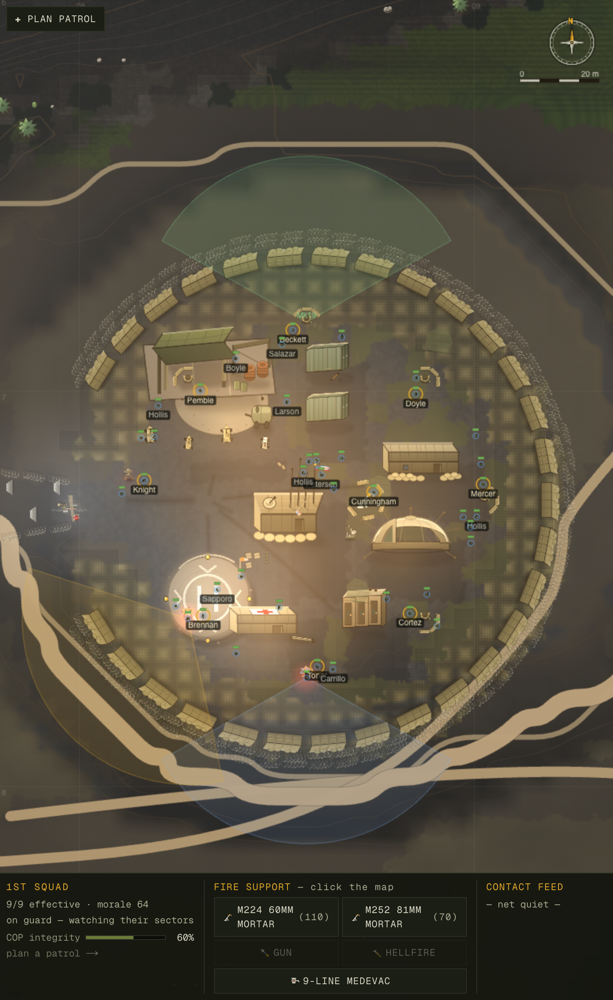

01The four complaints
The brief was blunt: up the realism of what already exists — no new features. Question everything. Four things bugged him, so we built or sharpened one measuring instrument per complaint and took a verbatim baseline on the starting commit before writing a line of fix.
A · "Soldiers get stuck"
Squads seemed to hang up on things; movement felt off. Suspicion: pathfinding.
B · "Paths are too squiggly"
The walked routes looked unnaturally wiggly, not like men picking a line across ground.
C · "Terrain is too smooth"
Next to real Korengal photos the valley walls looked like a soft airbrushed blob.
D · "The KOP feels fake"
The combat outpost read like a game asset — a neat ring on a flat pad — not a lived-in firebase.
The measuring is the point. Three of these four measurements changed what the fix even was — and one of them, the "stuck" complaint, sent us looking in a completely different room of the house.
02The two inversions
Before the wins, the honesty: the two loudest complaints were misdiagnoses, and the metric caught both. This is exactly why the process exists.
1.12 — a near-beeline.
On moderate slopes, 66% of route length ran straight down the fall line and only 11% along the
contour — the opposite of a real mountain trail, which traverses. The visible "squiggle" was the
per-man walking wobble, and it measured 0.2–0.4 m RMS — 0.16 px at play
zoom. Invisible. The paths didn't need de-wiggling; the trails needed to learn to
traverse.0.6–5% of the true shortest path; the two seeds that looked "STUCK" were probe-window
artifacts (the patrol just hadn't finished yet). The real freeze lived only in combat: a new
in-combat movement probe found an insurgent breaking contact was handed a raw 500 m beeline whose
end sat inside a cliff — the stall watchdog wiped the path, the brain re-issued the identical dead
target, forever. One fighter was frozen for 678 seconds. 42% of all insurgent in-contact time
was spent blocked.The fix for "the paths are too squiggly" was to make them curvier — because real trails bend around the mountain instead of charging up it. You cannot get there by trusting the complaint. You get there by measuring it.
03The fight — where "stuck" actually lived
Front A. Combat in this game is 100% AI — the player approves fires and MEDEVAC, and watches.
So a movement bug in a firefight is invisible to the player as a bug; it just reads as men
behaving strangely. The probe found three mechanisms, all fixed at the one chokepoint every combat
brain already calls (CombatSim.moveTo): snap every move goal to standable ground, route
the short bound past the 7 m steering fan, and treat cover adjacent to a wall as real
(cover inside the wall is not). Two more followed: a buddy dragging a casualty could teleport
the hauler into a solid cell and wedge him forever (one wedged guard produced 944 of 951 stall-wipes
on a single test), and the uphill march was simply too fast.
The march learned the mountain
Uphill movement was pricing at 2.45× too fast against doctrine. The fix is a load-keyed grade tax that interpolates two cited anchors — Naismith's rule for an unladen walker and FM 3-97.6 (+1 hour per 300 m of ascent under a fighting load) — keyed on the weight a man carries, never on which side he's on. The Korengal mobility asymmetry Sebastian Junger describes in War — light fighters flowing uphill while laden Americans grind — now emerges from physics, not a faction flag.
Casualties are a diagnostic on this project, never a target — there is no "correct" wounded count to defend, and the harness prints its own ±2.5 noise floor so nobody tunes to a number inside it. Final balance: 0 elements stranded, civilian casualties 0.
04The trails — teaching them to traverse
Front B. Once the inversion was clear, the target was doctrine: the USFS half-rule (a trail's grade should be at most half the hillside's), a ~10% network average, and 15–25% only in short sustained pitches — real trails contour across a slope and stack switchbacks at the spur noses. They are neither fall-line nor squiggle. The trail carvers were rebuilt to target grade explicitly and accept each step against the real cell rise, with a grade-priced route planner laying bench-riding laterals between villages.


The traced patrol route on korengal. The story here is in the numbers more
than the schematic — the walker's experienced grade is what changed.
05The walls — from airbrush to bedded rock
Front C. The measurement here was the most surprising: the valley's macro form was already right — wall slopes at a 37° median, a correct rim-to-river relief ratio. What it was missing was the meso scale, the 15–45 m structured relief that makes a real gneiss-and-schist mountainside read as bedded rock: cliff bands, benches, scree chutes, outcrop. The fbm walls were smooth gradient washes with a fake 60–79° curb where the floodplain met the slope. The fix re-beds the walls as banded strata — asymmetric bench/riser cycles, breach chutes, gully dissection, and a soft toe apron replacing the curb — with a full re-validation of world connectivity and river crossings after the last terrain edit.


Same seed, same camera, same clock. The raking dawn light now catches horizontal cliff-band/bench striation on the walls; the baseline caught nothing to catch.


The two campaigns visible in one frame: banded walls (front C) and trails that now switchback across the contour instead of running down the fall line (front B).
| Wall metric | Before | After | Held-out |
|---|---|---|---|
| Wall reversal density (per km) | 0–2.8 | 6.2–17.8 | — |
| 15–45 m band energy (m) | 1.98 | 3.64 | 3.43 |
| Floodplain rim slope (the fake curb) | 1.72 | 0.18 | 0.18 |
| Reachable valley (mean) | 60.6% | 75.2% | — |
| Reachable, worst seed | 11.0% | 65.3% | — |
06The outpost — the clutter is the realism
Front D. Real Korengal-era firebases (Junger's War and Vanity Fair dispatches; the film Restrepo) are terraced up a hillside, wrapped in a kinked "lumpy amoeba" of HESCO and wire, and buried in stuff: concertina everywhere, sandbag parapets, camo nets, conex boxes and GP tents, water pallets, ammo stacks, burn barrels, an improvised gym. The clutter is the realism. Our KOP had seven of those exact art assets sitting unused in the manifest, drawn nowhere — and a tan road painted edge-to-edge straight across the yard.


Every asset added is anchored to a reason it would be there: the gym sits at the exact spot the garrison sends its two off-duty lifters; burn barrels sit under the latrine smoke plume; the windsock is on the LZ. The buildings' collision footprints are untouched — this is skin, not new geometry.
Alongside the dressing, the garrison stopped reading as evenly-spaced frozen dots: a gym pair, 2–3-man conversation knots for ~40% of idlers, per-man staggered seat drift — deterministic, no random draws. And the road-through-the-yard was fixed on both sides: clipped at the wire in the renderer, and routed around the perimeter in generation (0 road cells inside the ring across 8 seeds, wall closed on all 360 bearings). Cost: about +2 ms a frame at a full combat tableau.
07The gate that lied
Two of the nine commits fixed no game bug at all — they fixed the test. When the terrain and combat changes were finished, the COIN win-condition gate (the standing check that asks does playing counterinsurgency well beat playing it badly?) went red. It would have been easy to "fix the game" until it went green. Instead we asked whether the gate was telling the truth.
The fix was to the measurement, not the game: score on the paired best seed (same valley, only the policy differs) and treat a fully-censored draw as a liveness check, never a red. Then a second, real ceiling surfaced that the noise had been hiding — the strategic scheduler only sampled once per game-day at midnight, starving operational squads to 83–89% idle. Making it event-driven and daylight-gated let the campaign's tempo emerge from how long operations actually take. The honest price, reported not buried: careful play scores lower under equal, doctrine-honest pacing (65 → 50) — but still beats body-count 87 to 0 on its best valley.
The rule this project runs on: a gate may only assert an invariant or cited doctrine — never the sim's own past output. A test that defends today's numbers criminalizes tomorrow's improvement. This whole episode is why that rule exists.
The nine commits, in order
The whole campaign in its own chronology — Phase 1 measures, three build fronts, two commits that fixed the test, and the trail contouring that closed it out. Every one carries its own before→after in the git log.
08What's next — and what we didn't fake
Numbers-first means residuals-named. The wins above are real and held on held-out seeds; here is what is honestly still open, each filed with a repro recipe.
- Wave 2b — the KOP generation rebuild (issue 033). The outpost is dressed, not reshaped. A contour-kinked polygonal perimeter, terraced interior benches, a continuous yard, and an ANA sub-compound are the next campaign. This is the biggest remaining "that looks fake" tell.
- Routing & metric residuals (issue 034). Banded walls impose real detours (route ratio 1.46, carried by three ford crossings) — the lever is planner cost, not trail generation. Two probes want a small re-aim under the new terrain.
- Relief-of-command is a lottery (issue 035). The COIN gate's noise source, now contained for testing but unfixed at the source: relief should fire on a pattern of command — an ROE and casualty trend — not a day-three dice roll.
- The COIN gate is slow (issue 030). Doctrine-honest pacing fits more operations into each day, which pushed the full 3-seed check to 30–40 minutes (a body-count leg hit 45–69 min and was killed more than once). A fast, deterministic "COIN smoke" config is still owed.
You can win every firefight and still lose the valley. This campaign didn't touch that truth — it made the ground you fight over, the trails you walk, and the outpost you defend honest enough that a soldier reading a field manual would recognize them.